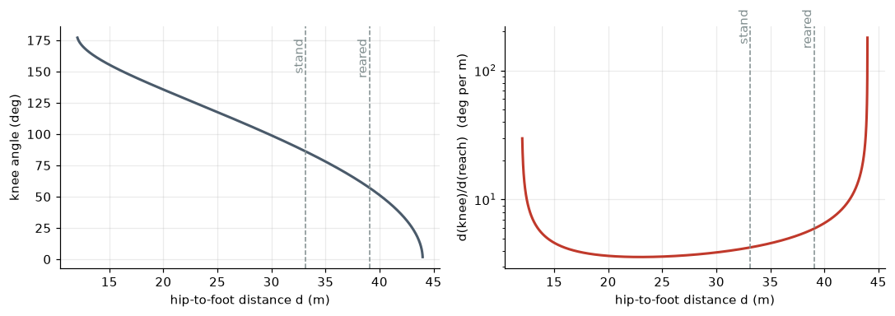
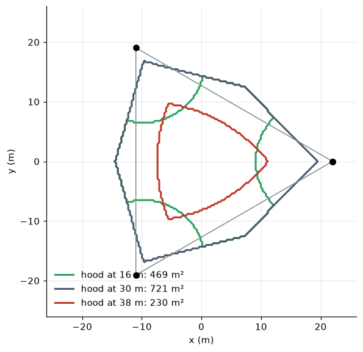
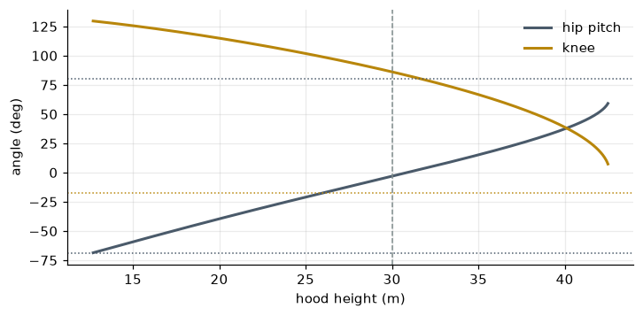
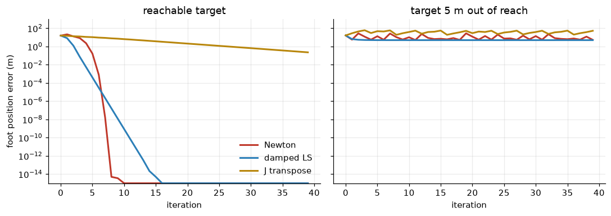

Inverse Kinematics: Putting the Foot Where You Want It
Closed-form solutions, branches, singularities, whole-body IK and Newton’s method, on a Martian tripod (part 2 of 4)
A worked introduction to inverse kinematics: the law-of-cosines solution for a two-link leg, solution branches and joint limits, singularities, whole-body IK for a tripod’s hood, and numerical IK by Newton and damped least squares.
explainer
robotics
kinematics
python
Author
Paul Milne
Published
October 25, 2026
Second of four explainers behind The Martian Tripod. Part 1 built the forward map from joint angles to foot position, \(\mathbf p = f(\mathbf q)\). Every gait needs the reverse: the planner decides where the feet and the hood should be, and something has to turn that into joint angles. That is inverse kinematics (IK): solve \(f(\mathbf q) = \mathbf p^\ast\) for \(\mathbf q\).
FK always has exactly one answer. IK can have none (the target is out of reach), several (the leg can bend either way), or infinitely many (the robot has more joints than the task needs). This post works through each case on the tripod.
Show code
import sys, math, warningsfrom pathlib import Pathwarnings.filterwarnings("ignore")ROOT = Path.cwd().resolve().parents[1] /"martian-tripod"sys.path.insert(0, str(ROOT))import numpy as npimport matplotlib.pyplot as pltimport mujocofrom tripod.build import writefrom tripod.params import DEFAULT as P, leg_ik, planar_ikfrom tripod.kinematics import foot_fk, foot_ik, rotzplt.rcParams.update({"figure.dpi": 110, "axes.grid": True, "grid.alpha": 0.25,"axes.spines.top": False, "axes.spines.right": False})BRASS, STEEL, RED, BLUE, GREEN, GREY ="#b8860b", "#4a5a6a", "#c0392b", "#2c7fb8", "#2ca25f", "#7f8c8d"model = mujoco.MjModel.from_xml_path(str(write()))L1, L2 = P.leg.thigh, P.leg.shinLIM = {j: model.jnt_range[model.joint(f"leg0_{j}").id].copy() for j in ("yaw", "hip", "knee")}def within_limits(q):returnall(LIM[j][0] <= v <= LIM[j][1] for j, v inzip(("yaw", "hip", "knee"), q))print(f"L1 = {L1:.0f} m, L2 = {L2:.0f} m; reach between {abs(L2 - L1):.0f} and {L1 + L2:.0f} m from the hip")
L1 = 16 m, L2 = 28 m; reach between 12 and 44 m from the hip
Divide and conquer: the yaw first
The tripod’s leg is yaw, then pitch, then pitch. The yaw turns a vertical plane; the hip and knee then work entirely inside that plane. So the 3-D problem splits in two.
Express the target in the hip’s own frame (undo the hood’s pose, the mount offset and the mount’s azimuth), giving \((x, y, z)\).
The leg’s plane must contain the target, so the yaw is \[\psi = \operatorname{atan2}(y, x),\] and within that plane the foot must reach horizontal distance \(\rho = \sqrt{x^2 + y^2}\) and height \(z\).
Solve the planar two-link problem for \((q_h, q_k)\).
Step 2 already hides a choice. \(\psi + \pi\) with reach \(-\rho\) points the plane the other way and reaches back through the body. It is a valid solution of the equations, but it is far outside the yaw limit of ±0.8 rad, so it is discarded. Step 2 also has a singularity: when the target is directly below the hip (\(\rho = 0\)), every yaw works. A tripod never puts its foot there, but a humanoid’s hip faces exactly this problem when the foot passes under it.
The planar two-link problem
Put the hip at the origin and the foot target at \((\rho, z)\), a distance \(d = \sqrt{\rho^2 + z^2}\) away. The thigh, the shin and the line from hip to foot make a triangle with sides \(L_1\), \(L_2\) and \(d\). The law of cosines gives the angle at the knee, and so the knee bend \(\beta\) (the shin’s direction relative to the thigh’s):
A solution exists only if \(-1 \le \cos\beta \le 1\), that is \(|L_1 - L_2| \le d \le L_1 + L_2\): the reachable annulus from part 1. When it exists there are two solutions, \(\pm\beta\), mirror images across the hip–foot line.
The thigh’s elevation \(\phi_1\) is then the direction to the foot, corrected by the angle between the thigh and that line:
The second term is the angle at the hip in the hip–knee–foot triangle. Writing it with \(\operatorname{atan2}\) rather than an \(\arccos\) keeps the right sign for both branches and stays accurate near the edge of reach. Finally the joint angles are \(q_h = -\phi_1\) and \(q_k = -(\phi_2 - \phi_1)\), using part 1’s convention that a positive rotation about \(+y\) swings a link downward.
Show code
def ik2(rho, z, knee_up=True):"""Planar two-link IK, written out in full. Returns (q_hip, q_knee) or None if out of reach.""" c = (rho*rho + z*z - L1*L1 - L2*L2)/(2*L1*L2)ifabs(c) >1:returnNone beta =-math.acos(c) if knee_up else math.acos(c) phi1 = math.atan2(z, rho) - math.atan2(L2*math.sin(beta), L1 + L2*math.cos(beta))return-phi1, -betadef fk2(qh, qk): p1, p2 =-qh, -(qh + qk)return np.array([L1*math.cos(p1) + L2*math.cos(p2), L1*math.sin(p1) + L2*math.sin(p2)])foot = (P.stance_radius - P.hip_radius, -(P.stance_height - P.hip_drop - P.leg.foot_radius))for up in (True, False): q = ik2(*foot, up)print(f"{'knee-up 'if up else'knee-down'}: q_hip = {math.degrees(q[0]):+7.2f} deg, q_knee = {math.degrees(q[1]):+7.2f} deg,"f" FK error {np.linalg.norm(fk2(*q) - foot):.1e} m, within limits: {within_limits((0, *q))}")print("agrees with the project's planar_ik:", np.allclose(ik2(*foot), planar_ik(L1, L2, *foot, True)))
knee-up : q_hip = -3.19 deg, q_knee = +86.16 deg, FK error 0.0e+00 m, within limits: True
knee-down: q_hip = +111.59 deg, q_knee = -86.16 deg, FK error 0.0e+00 m, within limits: False
agrees with the project's planar_ik: True
Figure 1: The two solutions for the standing foot. Knee-up (solid) is the spider stance the model uses; knee-down (dashed) reaches the same point with the knee bent backwards, which the knee’s joint limit forbids. The faint circles are the loci of the knee: within L1 of the hip and within L2 of the foot. The two knee positions are where those circles cross.
Geometrically the knee must lie on a circle of radius \(L_1\) round the hip and on a circle of radius \(L_2\) round the foot. Two circles cross in zero, one or two points, which is the whole existence-and-uniqueness story in one picture. The joint limits then choose between the branches: the model’s knee range \([-0.3, 2.6]\) rad allows the knee-up solution and forbids the knee-down one. The IK solver needs no special logic to choose; the limits make the choice.
Checking it everywhere
A closed-form IK should invert FK exactly wherever a solution exists. Throwing 50,000 random targets at it, in and out of the annulus, tests every branch of the code.
Show code
rng = np.random.default_rng(2)pts = rng.uniform([-50, -50], [50, 50], (50000, 2))worst, n_ok, n_out, n_lim =0.0, 0, 0, 0for rho, z in pts: q = ik2(rho, z)if q isNone: d = math.hypot(rho, z);assert d > L1 + L2 -1e-9or d < L2 - L1 +1e-9 n_out +=1;continue worst =max(worst, np.linalg.norm(fk2(*q) - (rho, z))) n_ok +=1; n_lim +=not within_limits((0, *q))print(f"{n_ok} reachable targets: worst round-trip error {worst:.1e} m")print(f"{n_out} targets correctly reported out of reach")print(f"{n_lim} reachable in principle but needing a joint outside its limits")
28085 reachable targets: worst round-trip error 2.6e-14 m
21915 targets correctly reported out of reach
17396 reachable in principle but needing a joint outside its limits
Every reachable target round-trips to rounding error, and every unreachable one is reported as such. Most of the geometrically reachable points in this square, about three in five, need a joint beyond its limit. They are behind the hip, above it, or curled under it. So a real IK solver must check limits as well as reach.
Singularities: where IK becomes ill-conditioned
At the edge of reach, \(d \to L_1 + L_2\), the leg is straight and the two branches merge. The knee angle depends on \(d\) through an arccos, whose derivative is infinite at \(\pm 1\):
Near a straight leg, moving the foot a centimetre outward demands a large knee rotation. Past the rim it demands an impossible one. That is a kinematic singularity, and it is the same thing as the Jacobian losing rank (part 3 computes \(\det J = \rho\,L_1L_2\sin q_k\)). It matters in practice: a controller that tracks a foot target near full reach will command huge joint velocities.
Show code
d = np.linspace(12.05, 43.995, 2000)cb = (d**2- L1**2- L2**2)/(2*L1*L2)qk = np.arccos(cb)dqk = d/(L1*L2*np.sin(qk))d_stand = math.hypot(*foot)d_rear = math.hypot(foot[0], foot[1] -7.0)fig, ax = plt.subplots(1, 2, figsize=(10, 3.6))ax[0].plot(d, np.degrees(qk), color=STEEL, lw=2); ax[0].set_ylabel("knee angle (deg)")ax[1].semilogy(d, np.degrees(dqk), color=RED, lw=2); ax[1].set_ylabel("d(knee)/d(reach) (deg per m)")for a in ax: a.set_xlabel("hip-to-foot distance d (m)")for x, lab in ((d_stand, "stand"), (d_rear, "reared")): a.axvline(x, color=GREY, ls="--", lw=1) a.text(x, a.get_ylim()[1]*0.95if a is ax[0] else300, lab, rotation=90, va="top", ha="right", color=GREY)plt.tight_layout(); plt.show()for x, lab in ((d_stand, "standing"), (d_rear, "reared up 7 m")): q = math.acos((x*x - L1*L1 - L2*L2)/(2*L1*L2))print(f"{lab:14s}: d = {x:.1f} m ({x/(L1 + L2):.0%} of full reach), {math.degrees(x/(L1*L2*math.sin(q))):.1f} deg of knee per metre")

Figure 2: Left: knee angle needed to put the foot a distance d from the hip. Right: how fast it changes, in degrees of knee per metre of foot travel. It blows up as the leg straightens at 44 m. The dashed lines mark the standing pose and the reared-up pose from the main post.
standing : d = 33.2 m (75% of full reach), 4.3 deg of knee per metre
reared up 7 m : d = 39.1 m (89% of full reach), 5.9 deg of knee per metre
Standing, the leg is at 75% of full reach and well conditioned: about 4° of knee per metre of foot travel. Reared up to look round, it is at 89% of reach and the sensitivity is up by a third. The steep part of the curve is not far beyond. That is one reason the machine in the main post’s video stops to rear up rather than walking tall.
Whole-body IK: posing the hood
A walking machine rarely thinks about one foot at a time. With all three feet planted, the question is: where can the hood go? Give the hood a pose (position \(\mathbf p_\text{hood}\) and orientation \(R_\text{hood}\)), keep the feet fixed, and solve IK for each leg separately. Each leg sees its foot target transformed into its own hip frame,
which is the project’s foot_ik. The hood’s pose has six degrees of freedom and the three legs have nine joints between them, but with the three feet pinned (nine constraints) the nine joints are fully determined by the six numbers of the hood pose. The legs form a parallel mechanism, like a flight simulator’s Stewart platform. In a serial arm, FK is easy and IK is hard; in a parallel mechanism it is the other way round. Here, IK of the hood is just three independent leg IKs.
The useful question is which hood poses are feasible: every foot within reach and every joint within its limits.
Show code
feet = [np.array([P.stance_radius*math.cos(math.radians(a)), P.stance_radius*math.sin(math.radians(a)), P.leg.foot_radius])for a in P.leg_azimuths_deg]def hood_ok(pos, R=np.eye(3)):try:returnall(within_limits(foot_ik(P, i, pos, R, feet[i])) for i inrange(3))exceptValueError:returnFalsexs = np.linspace(-26, 26, 181)fig, ax = plt.subplots(figsize=(6.6, 6))for h, col in ((16, GREEN), (30, STEEL), (38, RED)): ok = np.array([[hood_ok(np.array([x, y, h])) for x in xs] for y in xs]) ax.contour(xs, xs, ok.astype(float), levels=[0.5], colors=[col], linewidths=2) ax.plot([], [], color=col, lw=2, label=f"hood at {h} m: {ok.mean()*(xs[-1]-xs[0])**2:.0f} m²")tri = np.array([f[:2] for f in feet] + [feet[0][:2]])ax.plot(tri[:, 0], tri[:, 1], color=GREY, lw=1); ax.plot(tri[:, 0], tri[:, 1], "ko")ax.set_aspect("equal"); ax.set_xlabel("x (m)"); ax.set_ylabel("y (m)"); ax.legend(frameon=False, loc="lower left")plt.show()top =max(h for h in np.arange(20, 46, 0.1) if hood_ok(np.array([0, 0, h])))low =min(h for h in np.arange(5, 46, 0.1) if hood_ok(np.array([0, 0, h])))print(f"centred and level, the hood can go from {low:.1f} m to {top:.1f} m with the feet planted")

Figure 3: Where the hood centre can go with the three feet planted at the standing positions (black dots), at three hood heights, with the hood kept level. Inside each outline every leg has an IK solution within its joint limits. The machine stands at 30 m.
centred and level, the hood can go from 12.7 m to 42.5 m with the feet planted
Show code
hs = np.arange(low, top, 0.05)qs = np.array([foot_ik(P, 0, np.array([0, 0, h]), np.eye(3), feet[0]) for h in hs])fig, ax = plt.subplots(figsize=(7.5, 3.4))ax.plot(hs, np.degrees(qs[:, 1]), color=STEEL, lw=2, label="hip pitch")ax.plot(hs, np.degrees(qs[:, 2]), color=BRASS, lw=2, label="knee")for j, col in (("hip", STEEL), ("knee", BRASS)):for v in LIM[j]:if np.degrees(qs).min() -10< math.degrees(v) < np.degrees(qs).max() +10: ax.axhline(math.degrees(v), color=col, ls=":", lw=1)ax.axvline(30, color=GREY, ls="--", lw=1)ax.set_xlabel("hood height (m)"); ax.set_ylabel("angle (deg)"); ax.legend(frameon=False); plt.show()

Figure 4: Joint angles of leg 0 as the hood rises straight up, feet planted. Going up, the hip lifts and the knee opens until the leg runs out of reach at 42.5 m. Going down, the hip drops until it hits its −69° limit at 12.7 m. Dotted lines are the joint limits in range; the dashed line is the standing height.
Three different limits shape the region. At the standing height it is a rounded triangle set by the yaw limits: move the hood too far sideways and some leg has to swing more than 46° from its radial direction. The region is the same from about 20 m to 30 m. Above that, reach takes over and the region shrinks fast, from about 720 m² at 30 m to 230 m² at 38 m: a tall machine can lean less far before a leg runs out of length. Below about 20 m, the knee and hip limits start to cut pieces out of it as the legs fold up (the green outline at 16 m). Notice too that the region pokes outside the support triangle. Kinematically the hood can lean beyond its feet; whether it stays up is a question of statics and dynamics, taken up in parts 3 and 4. The planning explainer moves the centre of mass several metres from side to side every step, and this map shows how much room it has to do so.
Numerical IK: Newton’s method on the Jacobian
The closed form works because this leg is simple. A general chain, such as a seven-joint arm or a humanoid with a flexible spine, usually has no closed form, and IK is solved numerically. The workhorse is Newton’s method. Linearise FK about the current guess using the Jacobian \(J = \partial f/\partial\mathbf q\):
and choose the step that zeroes the error \(\mathbf e = \mathbf p^\ast - f(\mathbf q)\):
\[
\Delta\mathbf q = J^{-1}\mathbf e \qquad\text{(Newton–Raphson)}.
\]
Near a singularity \(J^{-1}\) explodes. When the target is unreachable it doesn’t exist at all. The standard fix is damped least squares, also called Levenberg–Marquardt. It minimises \(\|J\Delta\mathbf q - \mathbf e\|^2 + \lambda^2\|\Delta\mathbf q\|^2\), which gives
The damping \(\lambda\) trades accuracy for step size. Far from singularities it behaves like Newton. Near one, it refuses to take huge steps and settles for the closest point it can reach. A third, cruder option is the Jacobian transpose step, \(\Delta\mathbf q = \alpha J^\top\mathbf e\). It never inverts anything and always moves downhill on \(\|\mathbf e\|^2\), but it converges slowly.
Show code
def fk3(q):return foot_fk(P, 0, np.zeros(3), np.eye(3), q)def jac3(q, eps=1e-7): p0 = fk3(q)return np.column_stack([(fk3(q + eps*np.eye(3)[j]) - p0)/eps for j inrange(3)])def solve(target, method, q0=(0.3, 0.3, 0.5), iters=40, lam=3.0, alpha=1e-3): q = np.array(q0, float); hist = []for _ inrange(iters): e = target - fk3(q); hist.append(np.linalg.norm(e)) J = jac3(q)if method =="Newton": dq = np.linalg.solve(J, e)elif method =="damped LS": dq = J.T @ np.linalg.solve(J @ J.T + lam**2*np.eye(3), e)else: dq = alpha*J.T @ e q = q + dqreturn q, np.array(hist)q_true = np.array([0.2, *leg_ik(P)])target_ok = fk3(q_true)m0 = np.array([P.hip_radius, 0, -P.hip_drop])far = m0 + (target_ok - m0)/np.linalg.norm(target_ok - m0)*(L1 + L2 +5)fig, axs = plt.subplots(1, 2, figsize=(10, 3.6), sharey=True)for ax, tgt, title, lam in ((axs[0], target_ok, "reachable target", 3.0), (axs[1], far, "target 5 m out of reach", 10.0)):for method, col in (("Newton", RED), ("damped LS", BLUE), ("J transpose", BRASS)): q, h = solve(tgt, method, lam=lam) ax.semilogy(np.maximum(h, 1e-15), color=col, lw=2, label=method) ax.set_title(title); ax.set_xlabel("iteration")axs[0].set_ylabel("foot position error (m)"); axs[0].legend(frameon=False); axs[0].set_ylim(1e-15, 1e3)plt.tight_layout(); plt.show()q_n, h_n = solve(target_ok, "Newton")print("Newton from (17, 17, 29) deg: error by iteration", " ".join(f"{x:.0e}"for x in h_n[:9]))print(" lands on", np.round(np.degrees(q_n), 2), "deg; closed form", np.round(np.degrees(q_true), 2))q_b, _ = solve(target_ok, "Newton", q0=(0.5, -0.5, 0.3))print("Newton from (29, -29, 17) deg lands on", np.round(np.degrees(q_b), 2), "deg: the knee-down branch,","within limits"if within_limits(q_b) else"outside the joint limits")for lam in (3.0, 10.0): q_d, h_d = solve(far, "damped LS", lam=lam, iters=300)print(f"damped LS (lambda = {lam:.0f}), unreachable: stops {h_d[-1]:.2f} m from the target, knee {math.degrees(q_d[2]):.1f} deg")

Figure 5: Numerical IK for one leg in 3-D, Left: a reachable target (the standing foot, with 11.5° of yaw), starting from a poor guess. Newton and damped least squares (λ = 3) converge in a handful of iterations; the transpose method crawls. Right: a target 5 m beyond reach. Newton thrashes; damped least squares (λ = 10) settles 5 m short, at the nearest reachable point, with the leg straight.
Newton from (17, 17, 29) deg: error by iteration 2e+01 2e+01 1e+01 8e+00 2e+00 2e-01 8e-04 2e-08 5e-15
lands on [11.46 -3.19 86.16] deg; closed form [11.46 -3.19 86.16]
Newton from (29, -29, 17) deg lands on [ 11.46 111.59 -86.16] deg: the knee-down branch, outside the joint limits
damped LS (lambda = 3), unreachable: stops 5.83 m from the target, knee -23.2 deg
damped LS (lambda = 10), unreachable: stops 5.00 m from the target, knee 0.0 deg
Newton converges quadratically: once it is close, the number of correct digits roughly doubles each iteration, which is the plunge in the left panel. From this guess it recovers the closed-form joint angles exactly. From a different guess, with the hip raised and the knee nearly straight, it converges just as fast to the knee-down branch, which breaks the joint limits. Numerical IK finds a solution, usually the one nearest the starting guess, and knows nothing about branches or limits unless they are added. That is why walking controllers warm-start it from the previous timestep’s answer.
With the target out of reach, Newton has nothing to converge to, and its steps blow up near the straight-leg singularity. Damped least squares with enough damping does what you would want: it straightens the leg towards the target and stops exactly 5 m short. With too little damping it can stall at a bent-knee configuration, where the error is perpendicular to every direction the foot can move: a local minimum of \(\|\mathbf e\|^2\). Choosing \(\lambda\) is a real engineering decision, and practical solvers adapt it as they go. Every serious IK library uses some form of damping for this reason.
Moving the foot: task space vs joint space
IK is rarely solved for one point; a swing leg needs a whole path. There are two ways to get from the lift-off configuration to the touch-down one.
Interpolate the joints: blend the joint angles from start to finish. This is cheap and smooth for the motors, but the foot traces whatever curve FK makes of it.
Interpolate the foot: design the foot’s path in space (the gait uses a smooth forward motion plus a \(\sin\)-shaped lift), and solve IK at every instant.
Figure 6: One step of leg 0 seen from the side, with the hood fixed. Solid: the foot follows the planned path (smoothstep forward, sine lift of 4 m) and the joint angles come from IK at each instant. Dashed: the joint angles are interpolated directly between the same start and end poses; the foot sags below the ground mid-swing. Right: the joint angles for the task-space path.
joint interpolation: foot goes 0.90 m below the ground mid-swing
For a walking machine the foot’s path is what matters: it must clear obstacles and must not scuff the ground. So the gaits in the main post plan in task space and call IK at every control step, a few hundred times a second. Closed-form IK is cheap enough for that. A numerical solver warm-started from the last step converges in one or two Newton iterations.
Summary
IK solves \(f(\mathbf q) = \mathbf p^\ast\). It may have no solution, a finite number, or a continuum.
The tripod’s leg decouples: yaw by \(\operatorname{atan2}\), then a planar two-link problem solved by the law of cosines, with two mirror-image branches; the joint limits pick the knee-up one.
Near full reach the solution becomes ill-conditioned: a kinematic singularity, where the Jacobian loses rank.
Hood poses are found by three independent leg IKs, because the planted legs form a parallel mechanism. The feasible region shrinks as the hood rises.
Numerical IK uses Newton’s method on the Jacobian; damped least squares keeps it sane near singularities and out of reach.
K. M. Lynch and F. C. Park, Modern Robotics (2017), chapter 6 (inverse kinematics).
S. R. Buss, “Introduction to inverse kinematics with Jacobian transpose, pseudoinverse and damped least squares methods” (2004). A short, clear survey of the numerical methods.
C. W. Wampler, “Manipulator inverse kinematic solutions based on vector formulations and damped least-squares methods”, IEEE Trans. SMC (1986). The origin of damped least squares in robotics.